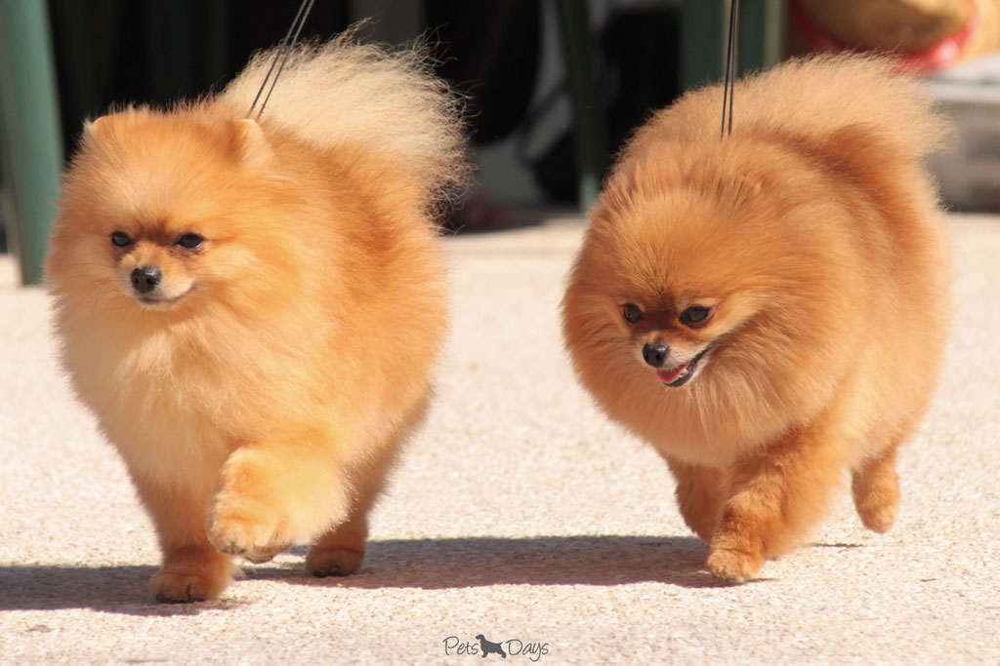

SOBRE MIM
Seja bem vindo(a) ao meu primeiro site criado para a faculdade de Engenharia de Software, a qual estou cursando no momento, me chamo Mayara e sou estudante de um curso de TI, área que descobri há menos de dois anos, após passar um longo período em casa durante a pandemia de Covid-19.
Comecei a pesquisar sobre a àrea de TI e descobri o quão promissora e necessária ela é, foi ai que cai de paraquedas nessa profissão, que espero um dia poder dominar muito conhecimento em tecnologia.
Atualmente trabalho na aviação como Comissária de Bordo, profissão que exerço há dez maravilhosos anos, amo o que eu faço e amo as horas vagas e meus dias de folga, quando posso me dedicar à minha futura profissão de TI, e aproveitar o tempo com meu lindo esposo e meus cães adoráveis.
A parte de criação de sites é algo que me encantou, em pensar na possibilidade de trabalhar em home office e ter mais tempo para aproveitar com a minha família, parece um sonho que pretendo realizar num futuro próximo!
Este site funciona como um currículo virtual e talvez eu continue aprimorando após entregá-lo como parte de um trabalho na faculdade, então se tiver dicas de melhoria e observações à fazer, elas serão muito bem vindas fique à vontade para deixá-las na parte de contatos no menu logo acima!
Espero nos falarmos em breve e até mais!
